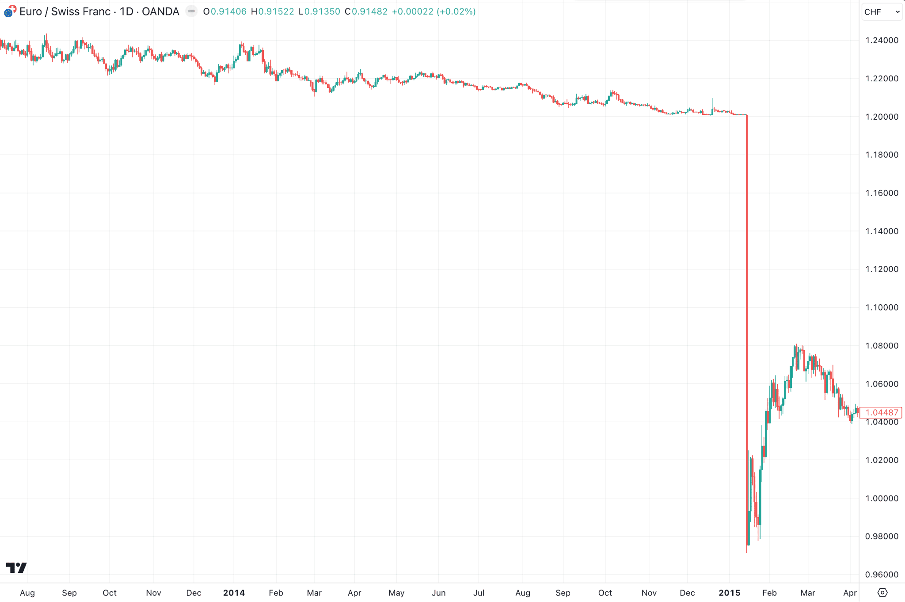
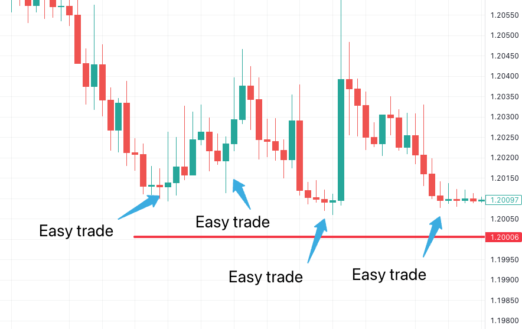
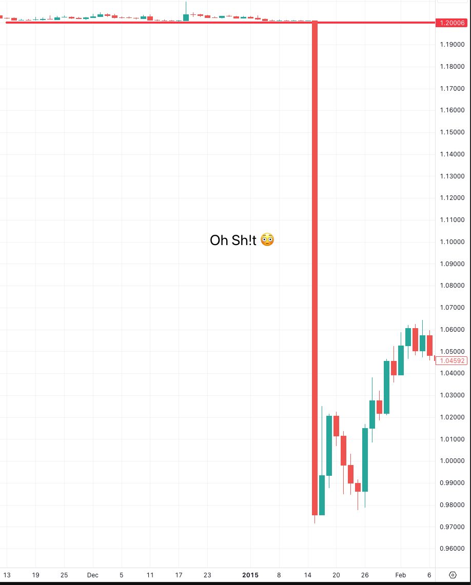

“This one candle can change your life…”
That was the message from some kid peddling a trading system on Instagram… I had to chuckle, but then I remembered…
Perhaps he wasn't talking about a magic pattern…maybe he was talking about EUR/CHF on 15th January 2015!
Here's the story…
SWISS NATIONAL BANK SHOCK

On 15th January 2015, the SNB suddenly decided to abandon the 1.20 floor on EUR/CHF, a level it had been defending for over 3 years…
With no warning, they just decided to remove the cap AND suddenly cut interest rates into negative territory (-0.75%).
Well, that was it for Euro Swiss… it collapsed instantly, and within minutes the pair fell from about 1.2 to 0.85.
A totally unheard of move for two large economies…
Price finally settled at about 1.05, but this was still a 30% range on the day. (30%! This is not some biotech small cap we're talking about.)
Anyway… the carnage was pretty widespread.
Traders had been playing long off the 1.20 floor for ages.
After all, the Swiss National Bank was not letting it go lower, not to mention the EUR/CHF was a well-known carry trade (profiting from the interest rate differential.)
So the 'easy' trade was to buy near that floor and sell into pops. Right? Right?!
“No brainer, boys!”

And that worked for a while, but the moves were relatively small, so what do you need to do to accommodate small moves?
Bigger size of course…
And like any black swan event, it all looks fine until it doesn't…
This trade looked like a little cash machine, until one day…

Look at the size of that move relative to everything else…
And we all know how stops work, don't we?
Price triggers them, and you get executed at the next available price.
Except when there's NO DAMN bid, and everyone is trying to sell at market, you might get erm “a few pips” slippage….
Retail brokers got totally mashed with this move:
- Alpari UK went bust
- FXCM needed an emergency $300m loan to survive
- IG lost up to £30m
- Citigroup reportedly lost $150-200m
- Loads of small firms and props blew up entirely.
And to make matters worse, this was before negative balance protection was implemented for UK retail clients, so some traders were presented with unpleasant bills:
“Jan Nowak, a client involved in the dispute, had three long positions on the cross, with trades worth £600. His forward trades were stopped out at 0.9235 and 0.9217, despite him placing a stop loss order 50 points below the 1.20 floor. As a result, he currently owes IG £21,171.” - FX-Markets
Poor Mr Nowak.
Luckily, now, UK retail traders trading with FCA-regulated firms have negative balance protection, which means their balance cannot go below £0.
This whole thing was a total disaster…
Just days before, the SNB Vice Chairman called the minimum exchange rate “a pillar of our monetary policy.”
And markets believed them, all loaded up long EUR/CHF.
Then, on that Thursday morning, at 10.30 am Zurich time, the SNB announced the removal of the floor and a further cut to rates.
Cue a cascade of events:
- Within seconds, the 1.20 floor fell
- Nine seconds after that, major banks providing liquidity began pulling all quotes
- Internal circuit breakers got triggered as dealers tried to frantically execute a cascade of sell orders manually
- There was ZERO liquidity available for around 40 minutes
- When liquidity did come back, spreads were 2,000-3,000 pips wide
What's the moral of the story?
Well, I'll let you decide… But that kid on Instagram? He was right about one thing… one candle CAN change your life.
Just maybe not the way he meant…